Chapter 7: Inference for Distributions
Expanded from Statistics_Chapter7_Inference_for_Distributions.pdf (23 pages)
1. Inference for the Mean of a Population: From $z$ to $t$
In Chapter 6, our confidence intervals $\bar{x} \pm z^* \frac{\sigma}{\sqrt{n}}$ and significance tests $z = \frac{\bar{x} - \mu_0}{\sigma / \sqrt{n}}$ relied on a strong simplifying assumption: that the population standard deviation $\sigma$ is known. In real experimental and observational work, if we do not know the population mean $\mu$, we almost never know the population standard deviation $\sigma$ either.
Standard Error of the Sample Mean ($SE_{\bar{x}}$)
When the standard deviation of a statistic is estimated from data by substituting the sample standard deviation $s$ for the unknown population parameter $\sigma$, the result is called the standard error of the statistic. For the sample mean $\bar{x}$ of $n$ observations, the standard error is:
What happens when we standardize $\bar{x}$ using $SE_{\bar{x}} = s/\sqrt{n}$ instead of $\sigma/\sqrt{n}$? Because the denominator $s/\sqrt{n}$ now varies randomly from sample to sample, the resulting ratio has slightly more spread than a standard Normal $N(0, 1)$ variable. In 1908, William Sealy Gosset (writing under the pseudonym "Student" while working as a brewer and statistician at Guinness) proved that when the underlying population is Normal, this ratio follows a new family of distributions: the $t$ distributions.
The One-Sample $t$ Statistic & Degrees of Freedom
Draw a Simple Random Sample (SRS) of size $n$ from a population that has the Normal distribution with mean $\mu$ and unknown standard deviation $\sigma$. The one-sample $t$ statistic
has the $t$ distribution with $n - 1$ degrees of freedom, denoted $t(n - 1)$. The degrees of freedom $\text{df} = n - 1$ come directly from the sample standard deviation $s = \sqrt{\frac{1}{n-1}\sum (x_i - \bar{x})^2}$ in the denominator.
Properties of the $t(k)$ Density Curves
- Symmetric and bell-shaped around $0$: Like the standard Normal $N(0, 1)$ density curve, every $t(k)$ density curve is symmetric and single-peaked at $0$.
- Heavier tails (greater spread) than $N(0, 1)$: Replacing the fixed constant $\sigma$ with the random sample estimate $s$ injects extra uncertainty into the ratio $t$. Whenever $s$ happens to underestimate $\sigma$ in a small sample, $|t|$ becomes large. Consequently, $t(k)$ curves have more probability in the tails and a slightly lower peak at $0$ than the standard Normal curve.
- Convergence to $N(0, 1)$ as $\text{df} \to \infty$: As the sample size $n$ (and hence $\text{df} = n - 1$) increases, the sample standard deviation $s$ estimates $\sigma$ with ever greater precision. As $k \to \infty$, the $t(k)$ density curve approaches the standard Normal $N(0, 1)$ curve (which forms the $\infty$ bottom row of a standard $t$-table).
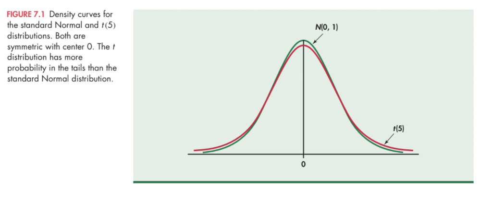
View Original Handwritten Notes — Pages 1 & 2 (Standard Error & $t$ Distributions)
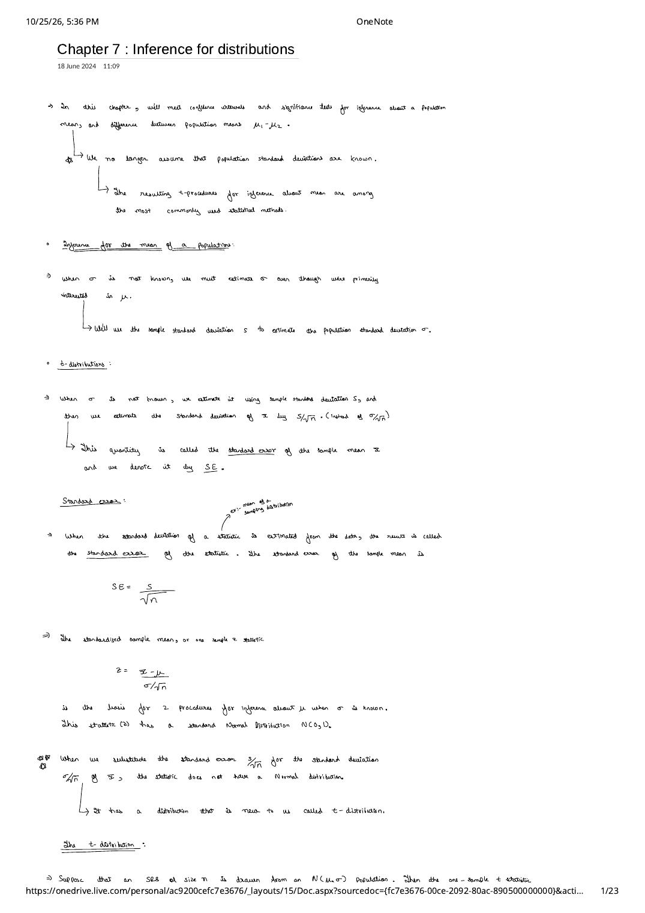
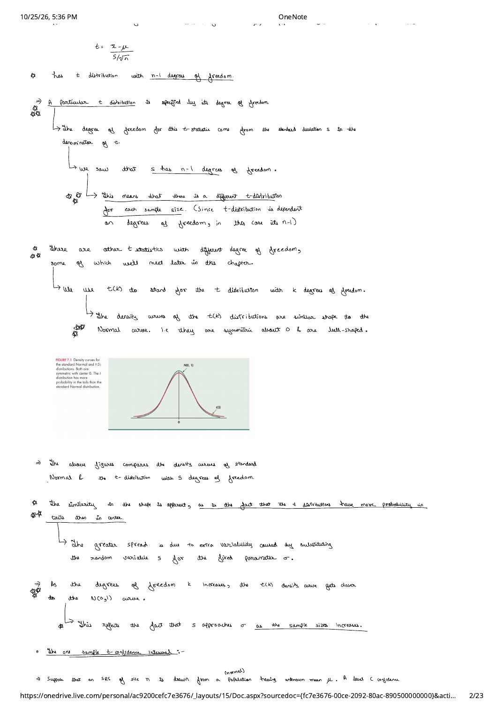
2. One-Sample $t$ Confidence Intervals & Significance Tests
Just as we constructed $z$ confidence intervals and tests using critical values $z^*$ from $N(0, 1)$, we construct $t$ confidence intervals and tests using critical values $t^*$ from the $t(n - 1)$ distribution.
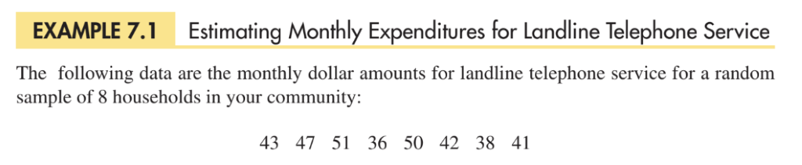
The One-Sample $t$ Confidence Interval & One-Sample $t$ Test
Draw an SRS of size $n$ from a Normal population with unknown mean $\mu$ and unknown standard deviation $\sigma$:
- Level $C$ Confidence Interval for $\mu$: $$\bar{x} \pm t^* \frac{s}{\sqrt{n}}$$ where $t^*$ is the critical value for the $t(n - 1)$ distribution with area $C$ between $-t^*$ and $t^*$.
-
One-Sample $t$ Test for $H_0: \mu = \mu_0$: Compute the test statistic
$$t = \frac{\bar{x} - \mu_0}{s / \sqrt{n}}$$
In terms of a random variable $T \sim t(n - 1)$, the $P$-value for a test of $H_0$ against:
- $H_a: \mu > \mu_0 \implies P(T \ge t)$
- $H_a: \mu < \mu_0 \implies P(T \le t)$
- $H_a: \mu \ne \mu_0 \implies 2\,P(T \ge |t|)$
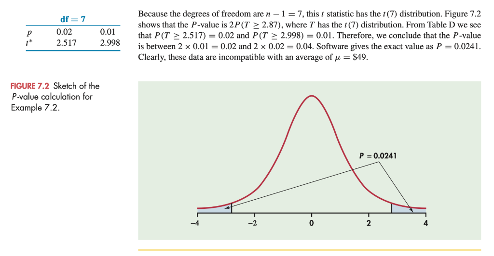
Worked Examples 7.1–7.3: Monthly Landline Telephone Expenditures ($n = 8$)
A market researcher surveys an SRS of $n = 8$ households that still maintain a landline telephone and records their monthly landline bills (in dollars):
- Check Normality & Sample Summary: Because $n = 8$ is small, we first inspect the Normal quantile plot (Figure 7.2 below), which shows the points lying close to a straight line with no outliers. The sample mean, standard deviation, and standard error are: $$\bar{x} = \$43.50, \qquad s = \$5.4248, \qquad SE_{\bar{x}} = \frac{5.4248}{\sqrt{8}} = \$1.918$$
- $95\%$ Confidence Interval for $\mu$ (Example 7.1): With $\text{df} = n - 1 = 7$, the $95\%$ critical value (upper tail $p = 0.025$) is $t^* = 2.365$: $$\bar{x} \pm t^* SE_{\bar{x}} = 43.50 \pm 2.365(1.918) = 43.50 \pm 4.54 = (\$38.96, \$48.04) \approx (\$39.0, \$48.0)$$
-
Two-Sided vs. One-Sided $t$ Test of $H_0: \mu = \$49$ (Examples 7.2 & 7.3): Suppose the national historical average landline bill was $\mu_0 = \$49$. To test whether the mean bill has changed ($H_a: \mu \ne 49$), we compute:
$$t = \frac{\bar{x} - \mu_0}{s / \sqrt{n}} = \frac{43.50 - 49}{1.918} = -2.87 \quad (\text{df} = 7)$$
In the $\text{df} = 7$ row of the $t$-table, $|t| = 2.87$ falls between the $p = 0.02$ critical value ($2.517$) and the $p = 0.01$ critical value ($2.998$). Thus:
- For the two-sided alternative $H_a: \mu \ne 49$, $2(0.01) < P < 2(0.02) \implies 0.02 < P < 0.04$ (software gives exact $P = 0.0241$). Note that this matches our $95\%$ confidence interval $(\$39.0, \$48.0)$, which excludes $\$49$!
- For the one-sided alternative $H_a: \mu < 49$, $0.01 < P < 0.02$ (exact $P = 0.0120$).
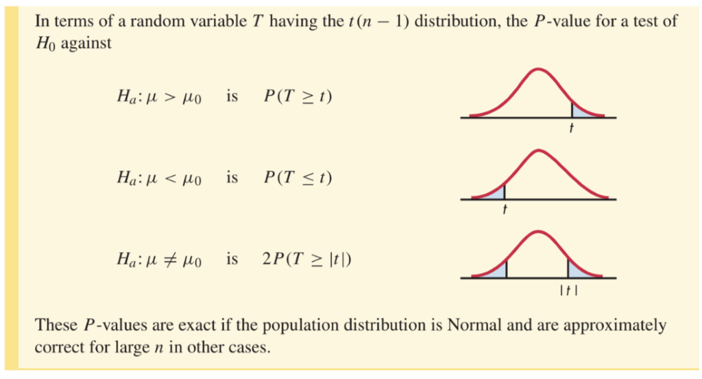
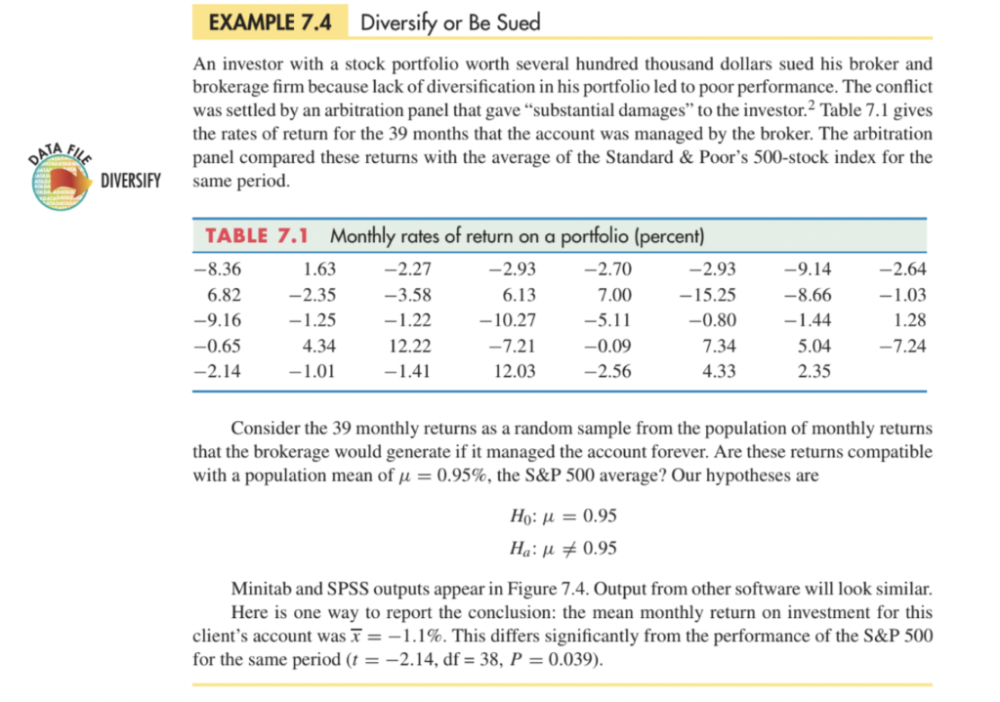
Case 7.1 (Examples 7.4–7.6): "Diversify or Be Sued!" — Auditing Portfolio Returns ($n = 39$)
A financial brokerage managed an aggressive, poorly diversified stock portfolio for a client over $n = 39$ months. During those 39 months, the client's portfolio had a mean monthly return of $\bar{x} = -1.10\%$ with standard deviation $s = 5.99\%$, while the S&P 500 index averaged $\mu_0 = 0.95\%$ per month. In arbitration, we test whether the client's underlying mean return $\mu$ differed significantly from the S&P 500 benchmark ($H_0: \mu = 0.95\%$ vs. $H_a: \mu \ne 0.95\%$):
With $\text{df} = 38$, software gives a two-sided $P$-value of $P = 0.039$ (one-sided $P = 0.0195$). Using the $95\%$ critical value $t^* \approx 2.024$, the $95\%$ confidence interval for the client's mean monthly return is:
Or equivalently, subtracting the $0.95\%$ benchmark, the $95\%$ confidence interval for the mean monthly underperformance relative to the S&P 500 is $(-3.99\%, -0.11\%)$ per month.
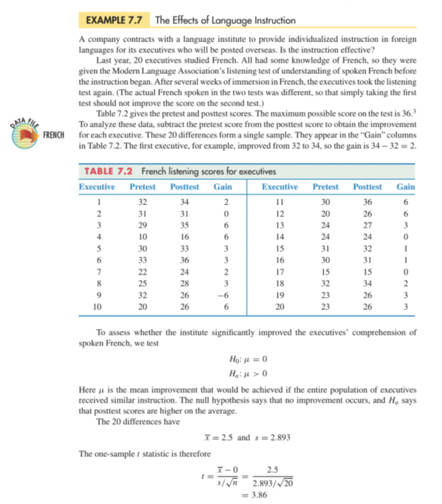
View Original Handwritten Notes — Page 3 (One-Sample $t$ Confidence Interval & Example 7.1)
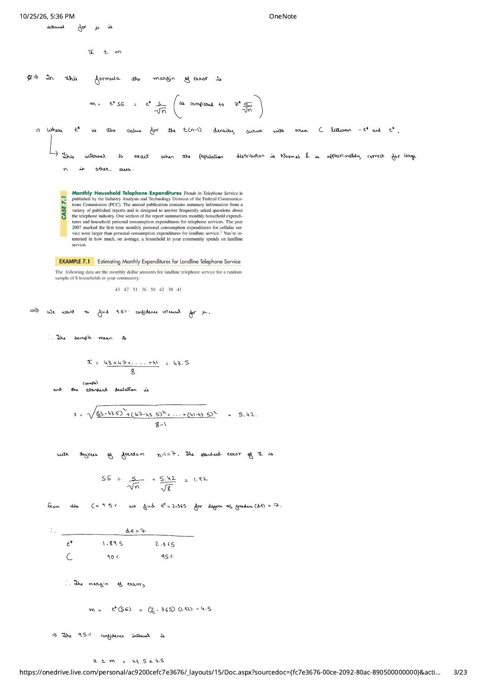
3. Matched Pairs $t$ Procedures, Robustness & the Sign Test
As we learned in Chapter 3, comparative studies are far more convincing than single-sample studies. In a matched pairs design, subjects are matched in pairs (or each subject serves as their own control, measured before and after a treatment), and the two treatments are randomly assigned within each pair.
Core Rule of Matched Pairs $t$ Procedures
In a matched pairs study with $n$ pairs of observations $(x_{1i}, x_{2i})$, never apply a two-sample test to the two columns separately (because the before and after measurements on the same subject are strongly dependent!). Instead, compute the within-pair difference
for each pair, and apply the one-sample $t$ test or confidence interval directly to the single sample of $n$ differences $d_1, \dots, d_n$ with $\text{df} = n - 1$. Testing whether the two conditions have equal means is simply testing $H_0: \mu_d = 0$.
Worked Examples 7.7 & 7.8: Executive French Listening Scores ($n = 20$ Pairs)
Twenty corporate executives took the Defense Language Proficiency Test in French listening before and after an intensive immersion course. For each executive $i$, we compute the score gain $d_i = \text{After}_i - \text{Before}_i$. Across the $n = 20$ differences:
- Matched Pairs $t$ Test (Example 7.7): Testing $H_0: \mu_d = 0$ (no mean gain) against $H_a: \mu_d > 0$ (immersion improves listening scores): $$t = \frac{\bar{x}_d - 0}{s_d / \sqrt{n}} = \frac{2.500}{0.6469} = 3.86 \quad (\text{df} = 19)$$ In the $\text{df} = 19$ row, $t = 3.86$ exceeds the $p = 0.001$ critical value ($3.579$), giving a one-sided $P$-value of $P = 0.00053$. There is very strong evidence that the course improves French listening comprehension.
- $90\%$ Confidence Interval for Mean Gain (Example 7.8): Using $t^* = 1.729$ ($\text{df} = 19$, $90\%$ confidence): $$2.500 \pm 1.729(0.6469) = 2.500 \pm 1.118 = (1.38, \; 3.62)\text{ points}$$
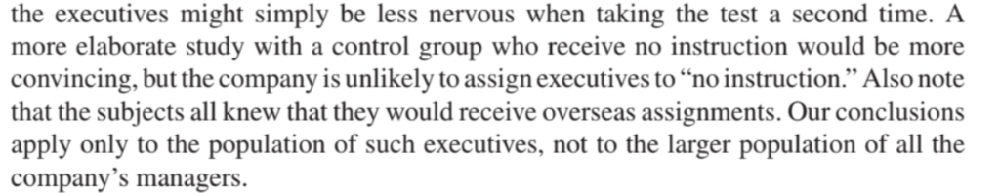
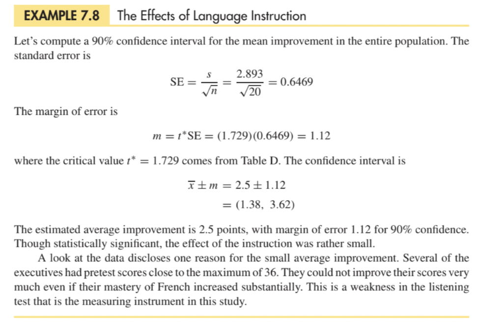
Robustness of the $t$ Procedures: Sample-Size Guidelines
A confidence interval or significance test is called robust if the confidence level or $P$-value does not change very much when the theoretical assumptions of the procedure are violated. Thanks to the Central Limit Theorem, the $t$ procedures are remarkably robust against non-Normality of the population, provided there are no extreme outliers and the sample size is large enough to overcome skewness:
| Sample Size $n$ | Practical Guideline for Using $t$ Procedures |
|---|---|
| $n < 15$ | Use $t$ procedures if the data appear close to Normal (roughly symmetric, single peak, no outliers). If the data are clearly skewed or if outliers are present, do not use $t$. |
| $15 \le n < 40$ | The $t$ procedures can be used except in the presence of outliers or strong skewness. |
| $n \ge 40$ | The $t$ procedures can be used safely even for clearly skewed distributions when the sample is large ($n \ge 40$), because $\bar{x}$ is approximately Normal by the Central Limit Theorem. |
Power of the One-Sample $t$ Test
Calculating the exact power of a $t$ test against a specific alternative mean $\mu_a$ requires the noncentral $t$ distribution, governed by the noncentrality parameter:
In Example 7.9, suppose the French language institute wants to know the power of its $n = 20$ executive study ($\text{df} = 19$, one-sided $\alpha = 0.05$, critical value $t^* = 1.729$) to detect a mean score gain of $\mu_a = 1.5$ points, assuming $\sigma \approx 3.0$. The noncentrality parameter is $\delta = \frac{1.5 - 0}{3.0 / \sqrt{20}} = 2.236$. Approximating via $Z$, $P(T \ge 1.729 \mid \delta = 2.236) \approx P(Z \ge 1.729 - 2.236) = P(Z \ge -0.51) \approx 0.69$ (exact noncentral-$t$ software calculation gives $\text{Power} = 0.685$).
The Sign Test for Matched Pairs (Non-Normal Populations)
What if a small paired sample shows extreme skewness or heavy outliers so that $t$ procedures are invalid? A simple distribution-free (non-parametric) alternative is the sign test, which tests the null hypothesis that the population median difference is zero:
The Sign Test for Matched Pairs
To test $H_0: \text{population median difference} = 0$:
- Discard any pairs with difference equal to $0$, leaving $n$ non-zero differences.
- Count the number $X$ of pairs where the difference is positive ($d_i > 0$).
- Under $H_0$, a randomly chosen non-zero difference is equally likely to be positive or negative ($p = 1/2$), so $X$ has the exact Binomial distribution: $$X \sim B\!\left(n, \, \frac{1}{2}\right)$$
Example 7.10 (Sign Test on Executive French Scores): Among the $20$ executives, $3$ had zero change ($d_i = 0$), leaving $n = 17$ non-zero differences. Of those $17$ executives, $X = 16$ improved ($d_i > 0$) and only $1$ declined. Under $H_0: p = 1/2$, the one-sided $P$-value is:
View Original Handwritten Notes — Pages 7 & 12 (Matched Pairs $t$, Robustness & Sign Test)
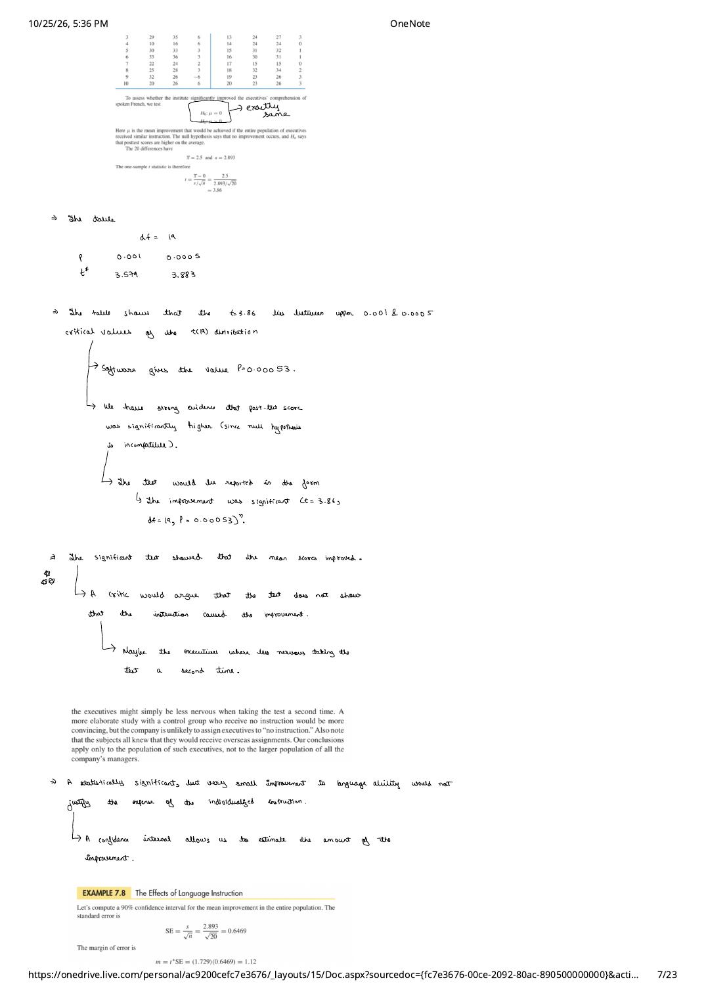
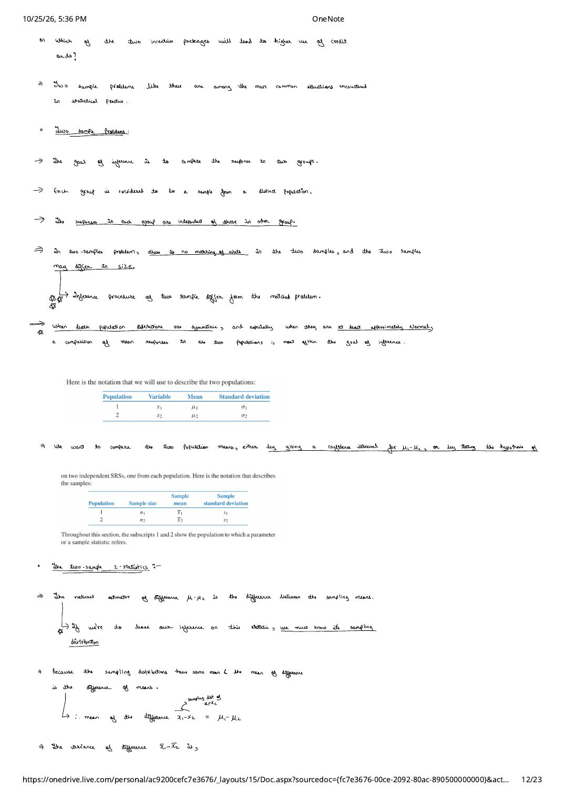
4. Comparing Two Means: The Two-Sample $t$ Procedures
In a two-sample problem, we have two independent Simple Random Samples of sizes $n_1$ and $n_2$ drawn from two distinct populations (or two treatment groups in a completely randomized experiment) with unknown population means $\mu_1, \mu_2$ and unknown standard deviations $\sigma_1, \sigma_2$. Unlike matched pairs, there is no pairing between individuals in Sample 1 and Sample 2, and the sample sizes $n_1$ and $n_2$ do not even need to be equal.
| Population | Variable | Population Mean | Population SD | Sample Size | Sample Mean | Sample SD |
|---|---|---|---|---|---|---|
| Population 1 | $X_1$ | $\mu_1$ | $\sigma_1$ | $n_1$ | $\bar{x}_1$ | $s_1$ |
| Population 2 | $X_2$ | $\mu_2$ | $\sigma_2$ | $n_2$ | $\bar{x}_2$ | $s_2$ |
Sampling Distribution of $\bar{x}_1 - \bar{x}_2$ & the Two-Sample $t$ Statistic
To compare $\mu_1$ and $\mu_2$, our natural point estimator for $\mu_1 - \mu_2$ is the difference between the sample means, $\bar{x}_1 - \bar{x}_2$. By the rules for means and variances of independent random variables from Chapter 4:
- Mean of $\bar{x}_1 - \bar{x}_2$: $\mu_{\bar{x}_1 - \bar{x}_2} = \mu_1 - \mu_2$.
- Variance of $\bar{x}_1 - \bar{x}_2$: Because the two samples are independent, their variances add even when we subtract the means: $$\sigma_{\bar{x}_1 - \bar{x}_2}^2 = \sigma_{\bar{x}_1}^2 + \sigma_{\bar{x}_2}^2 = \frac{\sigma_1^2}{n_1} + \frac{\sigma_2^2}{n_2} \implies \sigma_{\bar{x}_1 - \bar{x}_2} = \sqrt{\frac{\sigma_1^2}{n_1} + \frac{\sigma_2^2}{n_2}}$$
- Standard Error of $\bar{x}_1 - \bar{x}_2$: Replacing unknown $\sigma_1, \sigma_2$ with sample standard deviations $s_1, s_2$: $$SE_{\bar{x}_1 - \bar{x}_2} = \sqrt{\frac{s_1^2}{n_1} + \frac{s_2^2}{n_2}}$$
The Two-Sample $t$ Procedures (Welch–Satterthwaite Approximation)
Draw independent SRSs of sizes $n_1$ and $n_2$ from two Normal populations with parameters $(\mu_1, \sigma_1)$ and $(\mu_2, \sigma_2)$. The two-sample $t$ statistic:
is closely approximated by a $t(\text{df})$ distribution using one of two degrees-of-freedom rules:
- Option 1 — Satterthwaite (Software) Approximation: $$\text{df} = \frac{\left(\dfrac{s_1^2}{n_1} + \dfrac{s_2^2}{n_2}\right)^2}{\dfrac{1}{n_1 - 1}\left(\dfrac{s_1^2}{n_1}\right)^2 + \dfrac{1}{n_2 - 1}\left(\dfrac{s_2^2}{n_2}\right)^2}$$ Note that $\text{df}$ is generally not an integer and is always at least $\min(n_1 - 1, n_2 - 1)$ and at most $n_1 + n_2 - 2$.
- Option 2 — Conservative Hand-Calculation Rule: Use $\text{df} = \min(n_1 - 1, \, n_2 - 1)$, the smaller of $n_1 - 1$ and $n_2 - 1$. This guarantees that true confidence levels are at least $C$ and $P$-values are slightly conservative (larger).
Level $C$ Confidence Interval for $\mu_1 - \mu_2$:
Two-Sample $t$ Test for $H_0: \mu_1 = \mu_2$ ($\mu_1 - \mu_2 = 0$):
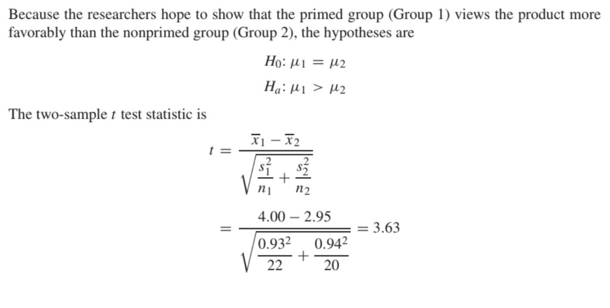
Worked Examples 7.11 & 7.12: Wine Labels with Animals — Does Conceptual Priming Work?
Marketing researchers tested whether prior exposure ("priming") to an image of a frog makes consumers rate a wine bottle featuring a frog on its label more favorably. Subjects were randomly assigned to either the Primed group ($n_1 = 22$, $\bar{x}_1 = 4.00, s_1 = 0.93$) or the Nonprimed group ($n_2 = 20$, $\bar{x}_2 = 2.95, s_2 = 0.94$). To test $H_0: \mu_1 = \mu_2$ vs. $H_a: \mu_1 \ne \mu_2$:
- Using Option 2 (Conservative $\text{df}$): $\text{df} = \min(22 - 1, 20 - 1) = 19$. In the $\text{df} = 19$ row, $t = 3.63$ lies between $t^*_{0.001} = 3.579$ and $t^*_{0.0005} = 3.883$, so the two-sided $P$-value satisfies $0.001 < P < 0.002$.
- Using Option 1 (Satterthwaite Software $\text{df}$): $\text{df} = 39.5$ (or $39$), giving $P = 0.0008$ and a $95\%$ confidence interval of $(0.47, 1.63)$ points.
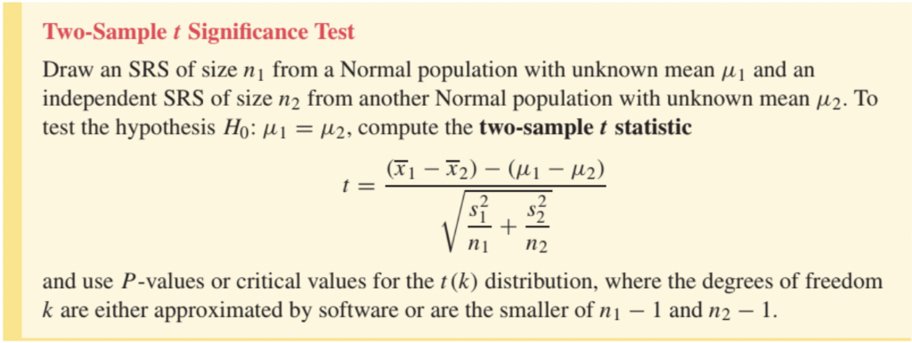
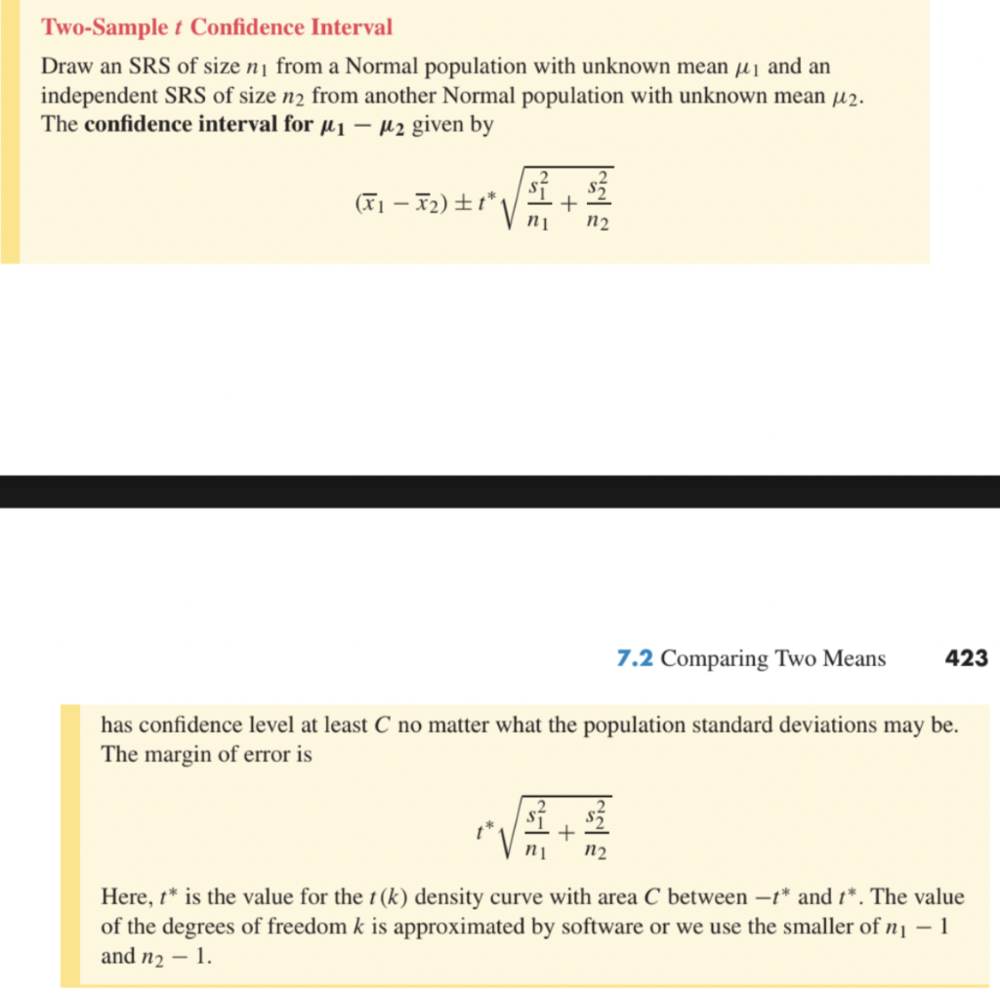
Worked Examples 7.13 & 7.14: USDA Wheat Prices in September vs. July
The U.S. Department of Agriculture (USDA) sampled wheat prices ($/bushel) received by farmers in September ($n_1 = 90, \bar{x}_1 = \$3.61, s_1 = \$0.19$) and in July ($n_2 = 45, \bar{x}_2 = \$2.95, s_2 = \$0.22$). We compute a $99\%$ confidence interval for the mean price difference $\mu_1 - \mu_2$:
- Conservative $\text{df} = \min(89, 44) = 44$: Using the $\text{df} = 40$ table row ($t^* = 2.704$) or exact $\text{df} = 44$ ($t^* = 2.692$): $$(\$3.61 - \$2.95) \pm 2.704(0.03843) = \$0.66 \pm \$0.104 = (\$0.56, \; \$0.76)\text{ per bushel}$$
- Satterthwaite $\text{df} = 77.7$: Gives virtually the identical $99\%$ interval $(\$0.56, \$0.76)$, and testing $H_0: \mu_1 = \mu_2$ yields $t = \frac{0.66}{0.03843} = 17.17$ ($P < 0.0001$).
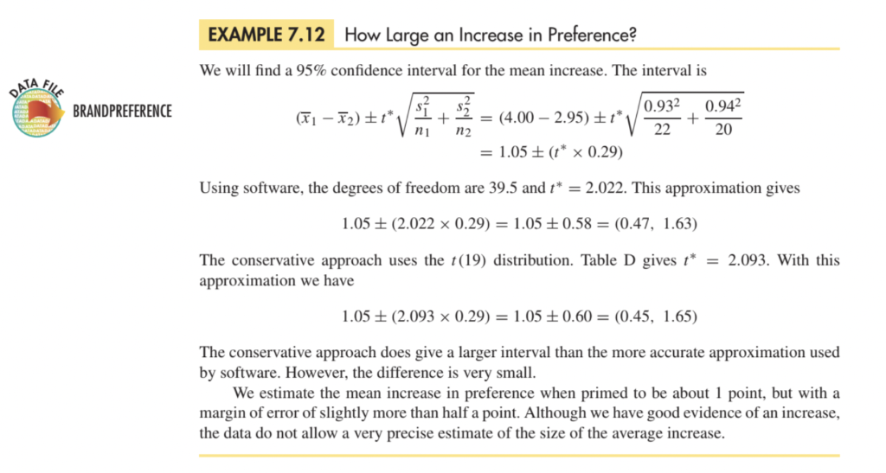
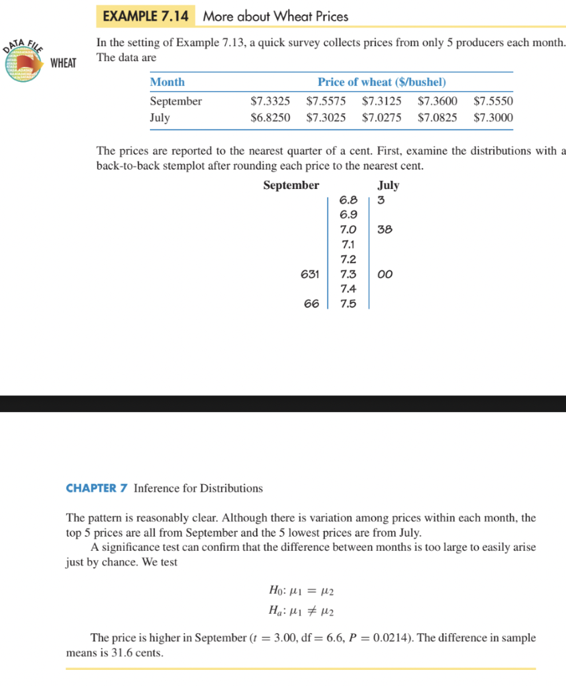
View Original Handwritten Notes — Page 13 (Two-Sample $t$ Statistic & Satterthwaite $\text{df}$)
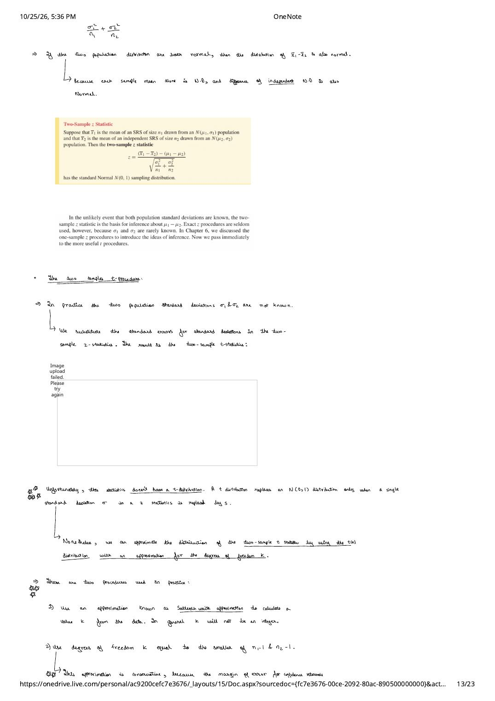
5. The Pooled Two-Sample $t$ Procedures & Power
If we made the extra assumption that both Normal populations have the exact same standard deviation ($\sigma_1 = \sigma_2 = \sigma$), then the variance of $\bar{x}_1 - \bar{x}_2$ simplifies to:
In that special case, both sample variances $s_1^2$ and $s_2^2$ estimate the same common parameter $\sigma^2$. We can combine ("pool") them by taking a weighted average with weights proportional to their degrees of freedom $n_1 - 1$ and $n_2 - 1$:
The Pooled Two-Sample $t$ Procedures (Assumes $\sigma_1 = \sigma_2$)
The pooled estimator of variance $s_p^2$ is:
When $\sigma_1 = \sigma_2$, the pooled two-sample $t$ statistic
follows an exact $t(n_1 + n_2 - 2)$ distribution. However, in general two-sample inference, the unpooled (Welch–Satterthwaite) $t$ procedure is almost always preferred because it does not require the fragile assumption $\sigma_1 = \sigma_2$, and its Satterthwaite approximation is highly accurate.
Case 7.2 (Examples 7.16 & 7.17): Financial Ratios of Healthy vs. Failed Firms
Financial analysts compared the current assets-to-current liabilities ratio for $n_1 = 68$ healthy firms ($\bar{x}_1 = 1.7276, s_1 = 0.6393$) and $n_2 = 33$ failed firms ($\bar{x}_2 = 0.8227, s_2 = 0.4811$). Using the pooled procedure with $\text{df} = 68 + 33 - 2 = 99$:
Notice in Figure 7.13 below that the unpooled Welch–Satterthwaite test gives $t = 7.93$ ($\text{df} = 81.2, P < 0.0001$) and $95\%$ CI $(0.678, 1.132)$, compared to the pooled $95\%$ CI $(0.655, 1.155)$.
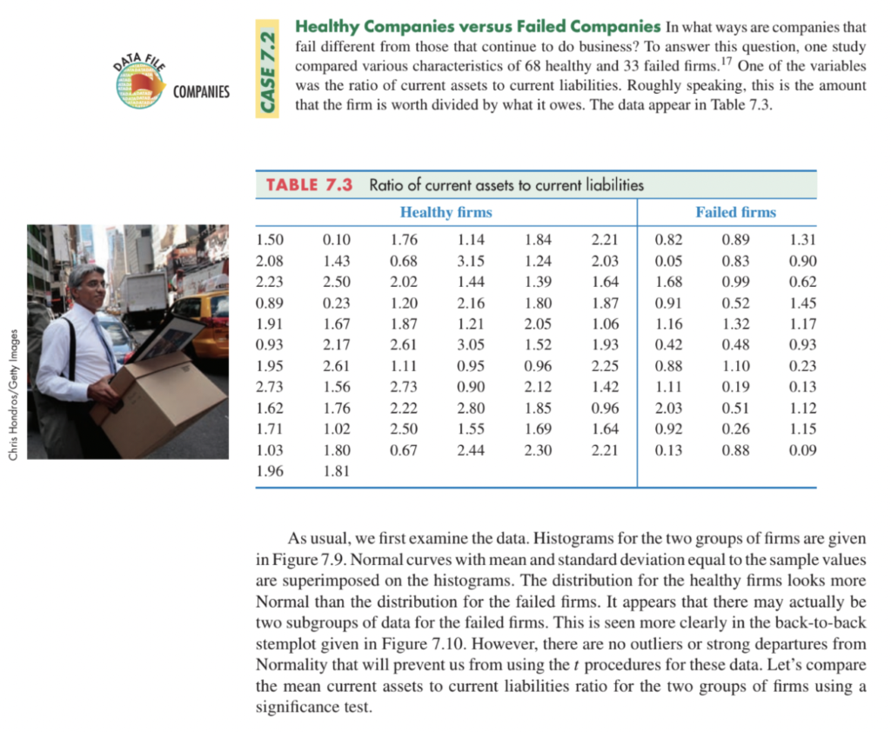
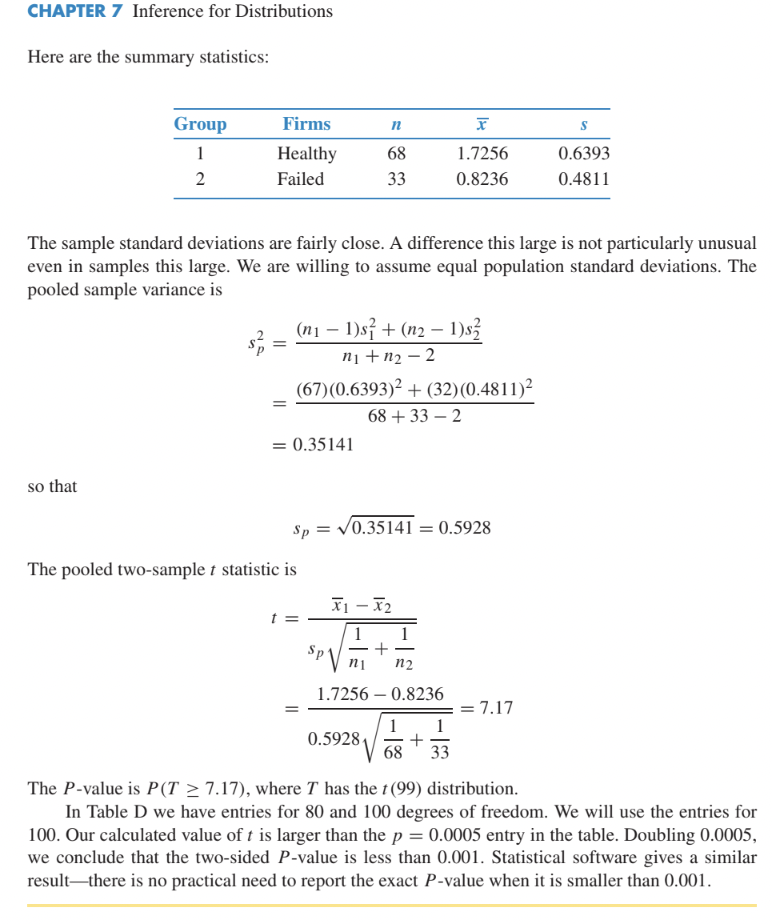
Power of the Two-Sample $t$ Test
To compute the power of a two-sample $t$ test when planning sample sizes $n_1, n_2$ (Example 7.19), we use the pooled degrees of freedom $\text{df} = n_1 + n_2 - 2$ and the two-sample noncentrality parameter:
View Original Handwritten Notes — Page 17 (Pooled Two-Sample $t$ Procedures)
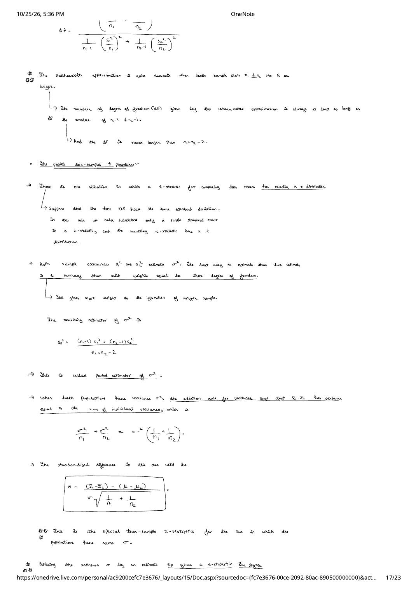
6. Inference for Population Spread: The $F$ Test for Comparing Two Variances
How do we formally test whether two Normal populations have the same spread ($H_0: \sigma_1 = \sigma_2$, or equivalently $\sigma_1^2 = \sigma_2^2$)? Whereas means are compared by their difference $\bar{x}_1 - \bar{x}_2$, variances are compared by their ratio using the $F$ statistic.
The $F$ Test for Comparing Two Population Standard Deviations
Draw independent SRSs of sizes $n_1$ and $n_2$ from two Normal populations with standard deviations $\sigma_1$ and $\sigma_2$. Under $H_0: \sigma_1 = \sigma_2$, the $F$ statistic
has the $F$ distribution with $\text{df}_1 = n_1 - 1$ numerator degrees of freedom and $\text{df}_2 = n_2 - 1$ denominator degrees of freedom, denoted $F(n_1 - 1, \, n_2 - 1)$.
- Order matters: $F(\text{df}_1, \text{df}_2)$ is not the same as $F(\text{df}_2, \text{df}_1)$.
- Practical convention for two-sided tests ($H_a: \sigma_1 \ne \sigma_2$): Always label the samples so that the larger sample variance $s_1^2$ is in the numerator, making $F = s_{\text{larger}}^2 / s_{\text{smaller}}^2 \ge 1$. Then find the upper-tail probability $P(\mathcal{F} \ge F)$ in the $F(n_1 - 1, n_2 - 1)$ table and double it to obtain the two-sided $P$-value.
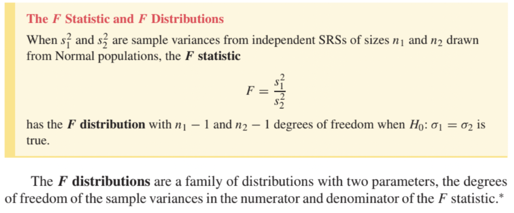
Worked Example 7.18: Testing Equal Spread in Healthy vs. Failed Firms
In Case 7.2, the healthy firms ($n_1 = 68$) had $s_1 = 0.6393$ and the failed firms ($n_2 = 33$) had $s_2 = 0.4811$. Placing the larger variance in the numerator to test $H_0: \sigma_1 = \sigma_2$ vs. $H_a: \sigma_1 \ne \sigma_2$:
Software gives the upper-tail probability $P(F(67, 32) \ge 1.77) = 0.0419$. Doubling this for the two-sided test yields $P = 2(0.0419) = 0.0838$.
Critical Warning: Extreme Non-Robustness of the $F$ Test for Variances
While $t$ procedures for means are remarkably robust to non-Normality (because the Central Limit Theorem forces $\bar{x}$ toward Normality), the $F$ test for comparing variances $s_1^2 / s_2^2$ is extremely sensitive to non-Normality. Even mild heavy tails or skewness inflate the sample variance $s^2$ (which squares deviations from the mean!) and cause the $F$ test to produce false-positive $P$-values far more often than $\alpha$.
As statistician George E. P. Box famously wrote: "To make the preliminary test on variances is rather like putting to sea in a rowing boat to find out whether conditions are sufficiently calm for an ocean liner to leave port!" Never use a preliminary $F$ test to decide between pooled and unpooled $t$ tests — simply use the unpooled Welch–Satterthwaite $t$ procedure by default.
View Original Handwritten Notes — Pages 20 & 21 (The $F$ Distribution & Non-Robustness Warning)
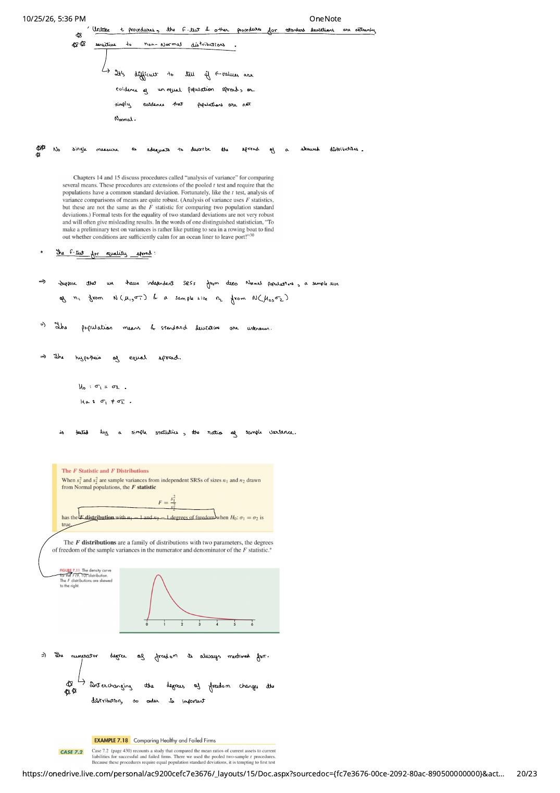
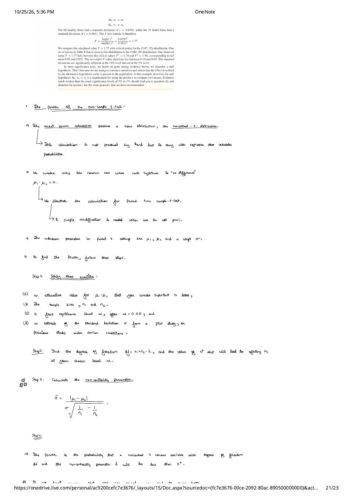